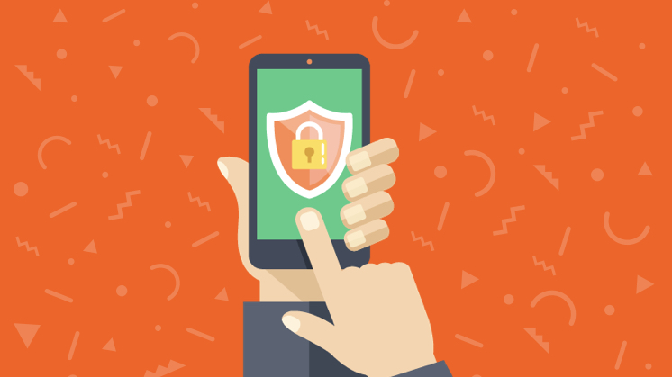

- En el mundo de la ciberseguridad, las amenazas se clasifican en varias categorías: malware, phishing, ransomware, entre otros. Es fundamental que tanto usuarios como empresas estén al tanto de estos riesgos y sepan cómo protegerse.
- Una de las técnicas más comunes para proteger la información es la autenticación multifactor, que asegura que solo usuarios autorizados puedan acceder a los sistemas sensibles. Esta medida añade una capa extra de seguridad, evitando accesos indeseados.
- Las redes privadas virtuales (VPN) son otro elemento clave en la ciberseguridad. Estas redes cifran la información transmitida a través de Internet, protegiendo la privacidad del usuario y evitando que los ciberdelincuentes intercepten datos valiosos.
La ciberseguridad es un campo crítico que protege los sistemas informáticos y redes de los ataques, accesos no autorizados y daños. En la era digital, las amenazas son cada vez más sofisticadas y los riesgos, más frecuentes. Es esencial contar con medidas preventivas para mitigar posibles vulnerabilidades.
Para abordar estas amenazas, es vital implementar estrategias de ciberseguridad efectivas. Esto incluye el uso de firewalls, antivirus y métodos de encriptación. Además, es crucial realizar auditorías de seguridad de forma periódica para identificar puntos débiles en la infraestructura tecnológica.
El aumento de los ataques cibernéticos ha provocado que muchas empresas inviertan en soluciones de seguridad avanzadas. Sin embargo, la conciencia y la formación continua son igualmente cruciales para prevenir el ataque más común: el error humano.
En este sentido, la capacitación en seguridad informática es vital para todos los empleados de una organización. A través de simulacros de phishing y entrenamiento en el manejo seguro de datos, se puede reducir considerablemente el riesgo de exposición.
Es importante señalar que la ciberseguridad no solo involucra la protección de datos de una empresa, sino también la privacidad de los usuarios. Las políticas de privacidad, el cumplimiento de normativas internacionales y la transparencia en el manejo de la información son fundamentales para construir una relación de confianza.
"La seguridad informática no es una opción, es una necesidad. Proteger nuestros datos es proteger nuestra identidad digital."
- Experto en Ciberseguridad
Por último, una de las mejores prácticas en ciberseguridad es realizar copias de seguridad frecuentes. Si bien ninguna medida es infalible, tener un respaldo de los datos puede ser un salvavidas en caso de un ataque exitoso, como un ransomware.